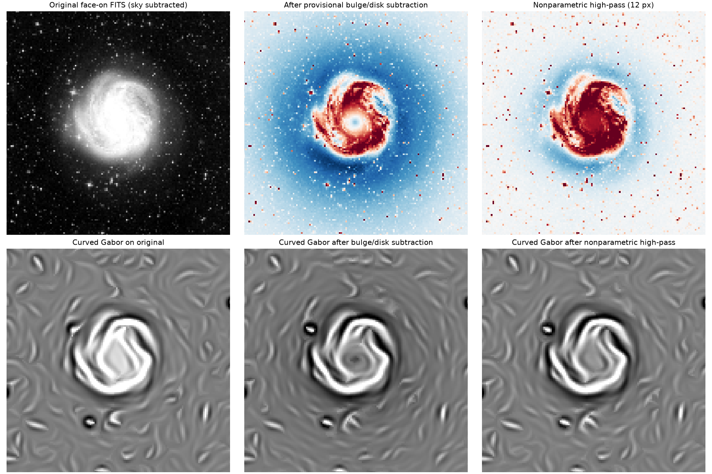
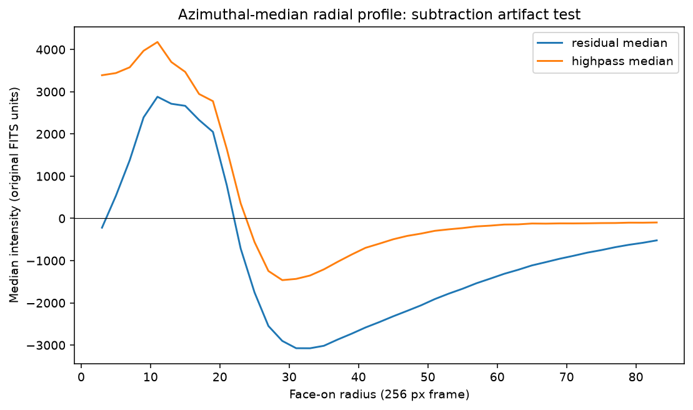

Finding: curved Gabor produces similar prominent curved ridges when applied directly to the original sky-subtracted image, so the feature is not solely caused by bulge/disk subtraction. However, the filter exaggerates boundaries, and the provisional smooth model produces a substantial positive-core/negative-halo residual. A physical inner ring is not established.


These are exploratory tests on a DSS2 image with 6.21 arcseconds per pixel. The PSF has not been independently validated. The strong near-circular Gabor response may arise from enhanced boundaries of the bright central galaxy and is not proof of a physical ring. The next scientific step is a better photometric/PSF-convolved smooth model and tracing extended ridges in the original image.